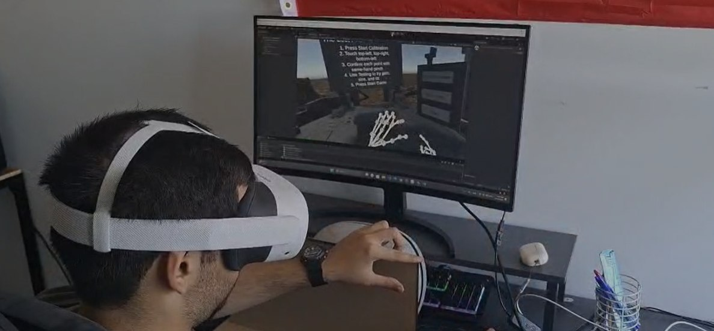
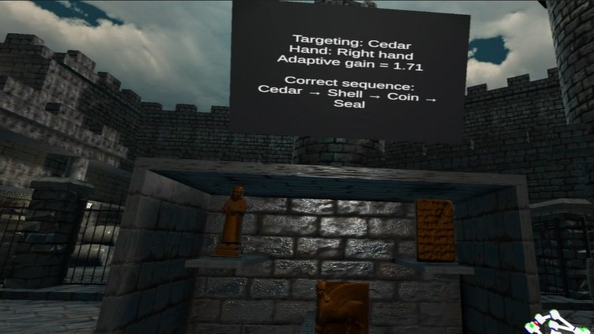
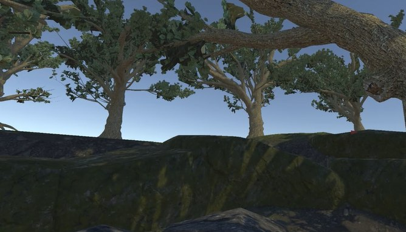
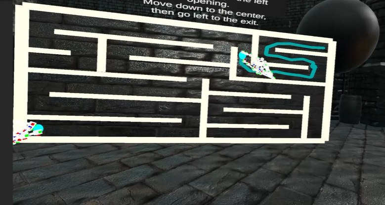
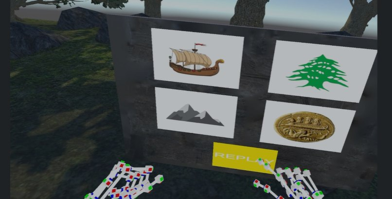
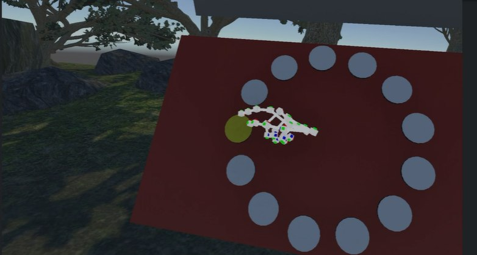
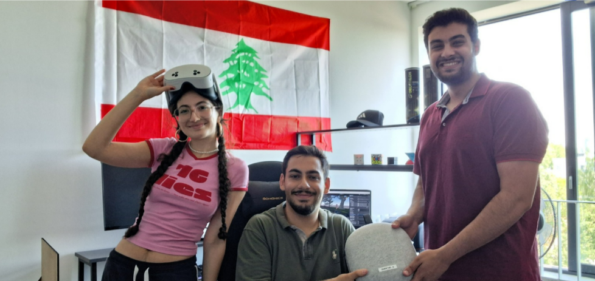

The problem
Your room is small. VR doesn't have to feel that way.
VR headsets can show you a huge, richly detailed world — but your actual hand is still bound by your actual room. On top of that, touching a virtual object usually means touching empty air, which quietly breaks immersion every time.
Passive haptics solves the second problem: a real object acts as a tactile stand-in for whatever virtual surface you're looking at. Movement gain solves the first: it remaps real hand motion to virtual hand motion, so a small real movement can cover a much larger virtual distance.
The build
What we changed under the hood.
A calibration flow you don't have to think about
The old system asked you to touch a corner with one hand and press a validation button with the other — technically fine, practically awkward. We replaced it with same-hand pinch confirmation: touch a corner with your index fingertip, pinch with that same hand to confirm. The tricky part was that a pinch gesture slightly shifts your fingertip right before it registers, so we added pre-pinch fingertip capture — continuously caching the last stable fingertip position while the hand is open, so the system records where you meant to touch, not where the pinch dragged you.
We also fixed the calibration point order — a strict top-left → top-right → bottom-left sequence — instead of the previous general corner-detection logic, which could occasionally misread which corner was which and render the board with the wrong orientation.

Remapping the fingertip, not the palm
The previous system anchored gain to the palm — a stable reference, but not where you actually make contact. We switched to fingertip-anchored rigid hand remapping: read the real fingertip position, map it to the corresponding point on the transformed virtual surface, compute the offset, then apply that offset rigidly to the entire virtual hand. The result is a virtual fingertip that reliably lands where you're actually looking, even after the board has been resized or tilted.
Gain that adapts to what you're reaching for
Gain that's fixed to the whole surface breaks down once you place small objects at different virtual depths — a near object needs a very different gain than a far one on the same board. We built adaptive object-depth gain, which adjusts automatically based on how far the targeted object actually is, plus smooth gain transitions so the jump between gain values doesn't feel jarring and break the sense of connection between your real and virtual hand.

The game
One board, five scenes, one Lebanese legend.
Rather than leave this as a bare technical demo, we built The Lost Phoenician Artifact — a VR puzzle-adventure across locations inspired by Lebanese heritage: Byblos, the Cedars of Lebanon, and Baalbek. The player hunts for a legendary lost artifact, and the same calibrated board reappears as a completely different object in every scene — an artifact cabinet, a maze, a memory board, a Fitts'-law test surface — which is exactly the point: one proxy, reused meaningfully instead of just demoed once.

- Calibration Scene — the entry point. Players calibrate the physical board with the same-hand pinch workflow before anything else happens.
- Byblos — Adaptive Gain Game — select artifacts in the correct sequence at near, medium, and far depths, with gain adjusting automatically to each target.
- Byblos — Maze Game — drag a fingertip along a path on the board; tests continuous, precise surface tracking rather than discrete touches.
- Cedars Forest — Memory Game — watch and reproduce a sequence. We prototyped both 2D and 3D versions and kept the 2D one after the 3D version proved unreliable.
- Cedars Forest — Fitts' Law Game — a target-acquisition test built around Fitts' Law, used to validate that board tilt transformations still land the virtual fingertip accurately.



HCI thinking
Designing the interaction, not just the system.
Of course, before writing any Unity code, we had fun sketching storylines, puzzle ideas, and interaction layouts. A few HCI principles shaped the result directly: keeping the same physical object throughout the game to reduce cognitive load, adding hover and highlight feedback so it's always clear what's being targeted, giving players a dedicated calibration/testing scene to build intuition before real gameplay starts, and smoothing every gain transition so reach never jumps unpredictably.
This project was so fun to work on with my teammates Hadi and Mohammad! We gained some basic knowledge in Unity and VR principles, but we have so much more to learn!
